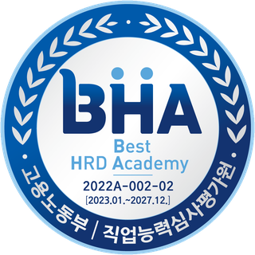
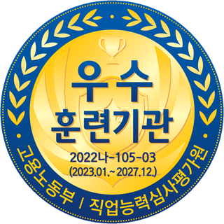

현직 솔루션 엔지니어의 강의와 프로젝트 지도
굿모닝아이텍(주) 클라우드 인프라 부서 현직자가 주강사·보조강사로 참여하고, 3년 이상 경력의 핵심인력이 팀별 멘토를 맡습니다.
- 주 1회 현직자 멘토링
- 질의 후 24시간 내 답변 체계
- 실제 고객사 구축 사례 기반 과제
01
수백 명 단위로 모집하는 일반 양성과정과 달리, 선도기업의 채용 규모에 맞춰 정원을 설정했습니다.
굿모닝아이텍(주) 클라우드 인프라 부서 현직자가 주강사·보조강사로 참여하고, 3년 이상 경력의 핵심인력이 팀별 멘토를 맡습니다.
기업에서 다년간 인재 채용·육성을 담당한 임원진이 선도기업이 신입 엔지니어에게 요구하는 기준을 직접 안내합니다.
서버·네트워크·OS 기초부터 vSphere·vSAN, Kubernetes, AWS, 백업·DR까지 다루므로 시스템 엔지니어·클라우드 인프라 직무로도 진출할 수 있습니다.
02
기수 20명 전원의 취업을 목표로 합니다. 수료생 전원을 굿모닝아이텍(주) 채용 검토 인력풀에 등록하고, 그 외 수료생은 유관기업과 일반기업 취업까지 지원합니다.
굿모닝아이텍(주) 부서장 중심 심사위원이 최종발표 평가. 차수별 상위 30% 우수자 포상
수료생 전원 등록. 멘토링·중간점검 기록을 바탕으로 현직자 추천사 사전 작성
굿모닝아이텍(주) 및 참여기업 채용 시 서류전형 면제
수료 후 취업상담·채용정보 제공, 취업자 고용유지 확인
굿모닝아이텍(주) 채용 목표
20명 / 연간
상반기 10명 · 하반기 10명 (연간 훈련인원 40명의 50%)
유관기업 추가 채용수요
5~9명
가상화 인프라 분야 유관기업 채용연계. 그 외 수료생은 일반기업 취업지원
수료 시 발급
직무를 선택하면 해당 직무와 연결된 교과목이 표시됩니다.
03
네트워크·서버 기초에서 시작해 vSphere·vSAN 핵심 운영, 컨테이너·AWS 확장, 백업·DR 순으로 쌓아 올리는 Bottom-up 구성입니다.
04
1차는 공통 기반 통합 실습, 2차는 4개 팀이 서로 다른 운영 시나리오를 수행합니다. 결과물과 함께 문제정의·해결과정·기술문서를 평가합니다.
평가항목: 기술구현 · 실무 적용성 · 문제해결 과정 · 협업 및 문서화 · 발표 및 질의응답
05
기업은 현장 기술과 채용을, 훈련기관은 강의·실습 인프라와 훈련생 관리를 맡아 한 과정을 공동으로 운영합니다.
선도기업
파트너기관


고용노동부 · 직업능력심사평가원 인증 BHA 훈련기관
1998년 개원 이후 IT 직업훈련을 이어 왔고, 2021년 K-디지털 트레이닝 시행 첫해부터 클라우드·생성형AI·개발 과정을 운영하고 있습니다. 2020년부터 KT·NHN Cloud 등 상용 클라우드 환경으로 실습합니다.
K-디지털 트레이닝 운영 실적(2021~2026) 기준 · 인증기간 2023.01~2027.12
주강사 · 한국정보교육원
네트워크·서버부터 vSphere·Kubernetes·AWS까지 정규교과와 프로젝트를 현직자 주강사와 함께 진행합니다.
주강사 · 현직자
현업 구축·운영 기준으로 강의하고, 실습과 프로젝트 결과물을 점검합니다.
보조강사 · 현직자
프로젝트 기간 팀별 실무 코칭과 기술 피드백을 담당합니다.
프로젝트 멘토
프로젝트 단계별 과업에 맞춰 담당 부서에서 참여해 중간·최종 결과물을 피드백합니다.
실장비 기반 훈련
현장에서 다루는 장비를 직접 설치·구성하고, 장애를 재현해 원인을 찾는 과정까지 실장비에서 수행합니다.
06
학습의지와 성장 가능성을 가장 중요하게 봅니다. 기준이 애매하다면 상담으로 지원 가능 여부를 먼저 확인하세요.
전문학사·학사 졸업(예정)자 이상
IT 분야 실무 경력이 있으면 지원 가능
상담에서 경력 사항을 확인합니다
국민내일배움카드 발급 가능자 (미보유 시 상담에서 발급 안내)
비전공자도 지원할 수 있으며, 선발 후 기초가 필요한 훈련생에게 사전학습 자료를 제공합니다.
참고용입니다. 선발 결과와는 관계없습니다.
항목을 선택하면 결과가 표시됩니다.
수강신청서와 사전상담 내용으로 지원 동기·관련 경험 확인
서버·네트워크·OS 기초 이해도와 학업계획 확인
학습의지·취업의지·성장 가능성 중심, 선도기업 현직자 면접관 참여
국민내일배움카드 참여 가능 여부 확인 후 등록
07
상반기 1기, 하반기 2기로 연 2회 운영할 예정입니다. 아래 일정은 예정이며, 확정 일정은 모집공고로 안내합니다.
08
멀티 클라우드·가상화·정보보안·빅데이터·AI 분야 IT 인프라 전문기업. 공공·금융·제조·유통·서비스 고객사에 토털 솔루션을 제공합니다.
과정 설계·운영·평가 총괄, 모집·선발, 채용연계
모집 홍보, HRD-Net 행정, 취업특강·취업플랫폼
훈련시설·장비, LMS, 상담 및 안내데스크
09
지원할 수 있습니다. 유사 직종 경험자와 관련 전공자를 우선 검토하지만, 비전공자도 학습의지·기초역량·훈련 참여 가능성을 종합해 선발합니다. 선발 후에는 기초역량 보완이 필요한 훈련생에게 사전학습 자료를 안내합니다.
전문학사·학사 졸업예정자 이상이 기본 기준입니다. 고등학교 졸업자도 IT 분야 실무 경력이 있으면 지원할 수 있으니, 상담에서 경력 사항을 함께 확인해 주세요.
채용을 보장하는 과정은 아닙니다. 굿모닝아이텍(주)는 기수당 10명 채용을 목표로 하며, 수료생 전원을 채용 검토 인력풀에 등록하고 채용 시 서류전형을 면제합니다. 최종 채용은 프로젝트 평가, 출결, 멘토 의견, 면접 결과를 종합해 결정됩니다.
가상화·클라우드·인프라·기술지원 분야 유관기업, 채널사, 협력사로 취업을 연계합니다. 전문 잡 컨설턴트 1:1 상담, 대한상공회의소 취업플랫폼과 취업특강도 함께 지원합니다.
서울 관악구 봉천로 227 한국정보교육원(당곡역 2번출구)에서 실장비를 활용한 100% 집체훈련으로 진행합니다. 일과는 09:00~18:00이며, 일과 후에는 강의실을 개방해 자율학습과 프로젝트를 이어갈 수 있습니다.
K-디지털 트레이닝 과정이므로 국민내일배움카드 발급과 참여 가능 여부 확인이 필요합니다. 카드가 없다면 상담 시 발급 절차를 안내받을 수 있습니다. 훈련비·훈련장려금 지원 기준은 모집공고와 고용24 안내를 기준으로 합니다.